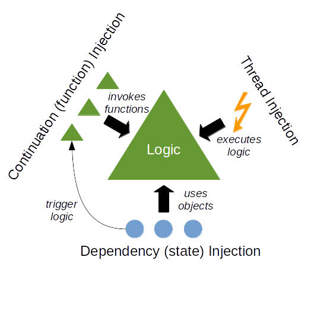

Add a single dependency to your existing Spring Boot
pom.xml and start declaring REST endpoints as YAML
files alongside your existing controllers.
Spring's dependency injection, security, persistence, and actuator configuration remain completely intact at every stage. OfficeFloor enriches Spring, it does not replace it.
<!-- Add to existing pom.xml -->
<dependency>
<groupId>net.officefloor.springboot</groupId>
<artifactId>officefloor-rest-spring-boot-starter</artifactId>
<version>@VERSION</version>
</dependency>
# File name = HTTP method + URL path src/main/resources/officefloor/rest/ greeting.GET.yml → GET /greeting greeting.POST.yml → POST /greeting greeting/{name}.GET.yml → GET /greeting/{name} # greeting.POST.yml: three composed functions validate: class: ValidateGreetingLogic outputs: valid: build build: class: PostGreetingLogic next: audit audit: class: AuditGreetingLogic
@RestControllerIn a Spring @RestController, the flow between
validation, business logic, and auditing is implicit, living in the
call stack and framework conventions rather than in any single
readable artefact. The YAML keeps each concern in its own function.
OfficeFloor wires them together in the order the file declares.
Each function declares only its own Spring bean dependencies, injected by Spring exactly as in any other bean. No function knows about the others, and no annotation describes the wiring. The YAML file is the complete specification.
Conditional branching, sequential composition, and error flows are all declared in the same file. The YAML indexes the codebase into small, focused functions so AI tools can navigate directly to the relevant code and make surgical changes.
In a Spring controller, the flow between an endpoint's steps is implicit, spread across the call stack and framework conventions: which function runs next, which branch handles a validation failure, which step writes the response. This is opaque to AI coding tools.
OfficeFloor's YAML files are the specification. Every endpoint's steps, their order, and their conditional branches are explicit in one file. Function Injection indexes the codebase into small, focused functions so AI tools can navigate directly to the relevant code and make surgical changes.
Just as Dependency Injection made dependencies first-class in the architecture by making them explicit, named, and wired in configuration rather than constructed inline, Function Injection makes function flow first-class. The wiring between functions is declared in configuration, not buried in the call stack.
Function Injection gives AI an explicit, contextual index into the codebase instead of implicit framework conventions.
And because that index lives in the code itself, OfficeFloor needs no AI tooling to stay legible: no Model Context Protocol (MCP) server or add-on to reconstruct how endpoints are wired. Documentation is enough. Where a framework's flow is implicit, such tooling is bolted on to recover what the code does not state; Function Injection removes the need.

The paradigm behind OfficeFloor: separating dependency, continuation, and thread concerns from application logic